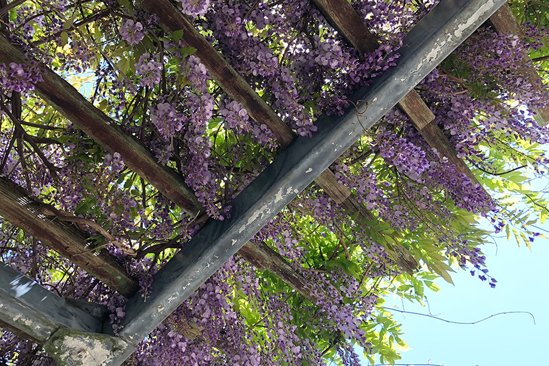

Photo
Story
———暑い。
天気がいいからって、日中から散歩をしようと思ったのがいけなかった。
滅多に通らない道を歩きながら、早々に後悔をし始める。
———あ、この公園。
ちょっとしたビル群を抜け、少しひらけた場所に出た。
———確か日陰があったはず。
ジリジリと照りつける太陽から逃れるように、池のある公園に足を踏み入れる。
池の周りの遊歩道を少し歩くと、立派な藤棚を見つけた。木製のベンチもある。
少し休憩しようと思い、ベンチに腰を下ろした。
水面が煌めいている。
遠くから鳥の鳴き声が聞こえる。
藤の下でじっとしていると、涼しい風が身体の熱を攫っていく。
髪が風に巻き上げられないように押さえながら、ふう、と息を吐いた。
しばらく水面を眺めていたら、制服の女子が2人、藤の下に入ってきた。
「あっつーい！」
「今日やばいよねぇ！」
そう口々に言いながら服をバタバタと扇ぐ。
白と水色のコントラストが爽やかなセーラー服だ。
「ヤバい、早く帰らないとママに怒られるんだけど！」
「待って、水だけ飲ませて」
はやくはやくと急かす少女の横で、もう1人の少女が鞄から水筒を引っ張り出す。
———いい飲みっぷり。
「ぷはっ」
少女が水筒から口を離す。
「先行くよ！」
「ま、待ってよ！」
賑やかな会話を引き連れ、２人の少女は嵐のように立ち去っていった。
鳥の鳴き声に耳を傾けていると、今度は真新しいスーツの女性が入ってきた。
焦ったようにベンチに座り、パンプスを脱ぐ。
「やっぱり」という表情とともに今度はバッグを漁る。
中から出てきたシンプルなポーチからカチャカチャと音が聞こえてきた。
目当てのものを見つけたのか、音が止み、可愛らしい絆創膏が出てくる。
踵に絆創膏を貼り、パンプスを履き直すと、ふらふらと藤の下から出ていった。
———お疲れ様。
心の中でそう声をかける。
私もそろそろ帰るべきだろうか。ゆっくりと腰をあげる。
藤棚の下から出て振り返ると、大きな犬を連れたお爺さんがベンチに腰掛けるのが見えた。